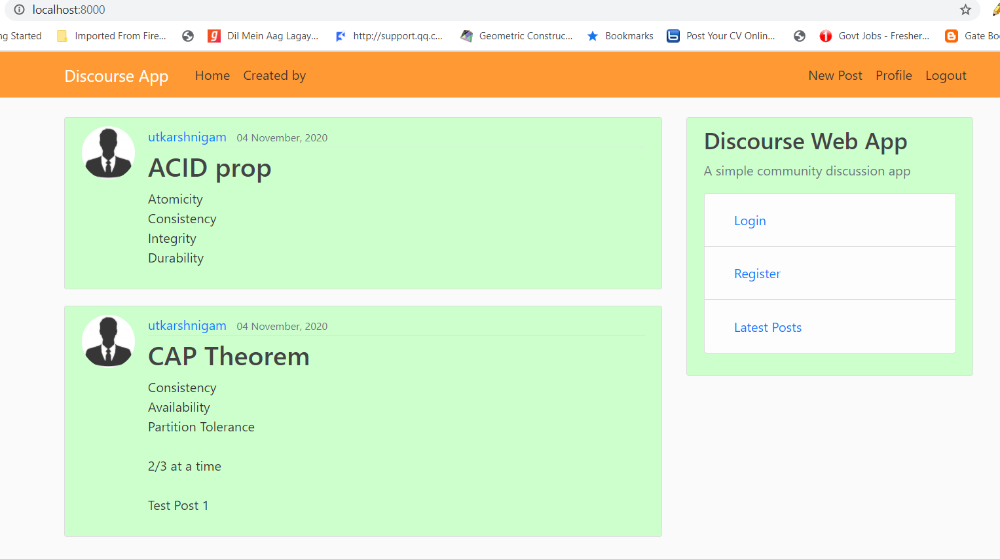

Utkarsh Nigam
B.Tech(INFORMATION TECHNOLOGY)
K.N.I.T SULTANPUR, 2017-21
My Projects
Blogging Web App
 A web app created using Django, which allows you to create a new blog; read, edit and delete existing blogs. It allows multiple users to create new accounts, through which users can create new blogs and read other users existing blogs. The app uses HTML5 and CSS(Bootstrap) for frontend. Python Pillow is used for setting up display picture for user account. It uses MySQL Database using Django ORM(Object Relational Mapping) for storage.
Bloom Filter
 A Bloom filter is a space-efficient probabilistic data structure, that is used to test whether an element is a member of a set. False positive matches are possible, but false negatives are not – in other words, a query returns either "possibly in set" or "definitely not in set".
This project presents a simple implementation of bloom filter in C++.
A Bloom filter is a space-efficient probabilistic data structure, that is used to test whether an element is a member of a set. False positive matches are possible, but false negatives are not – in other words, a query returns either "possibly in set" or "definitely not in set".
This project presents a simple implementation of bloom filter in C++.
-
 Check out my CodePen profile where I create some frontend applications using HTML, CSS, JavaScript, ReactJS.
Check out my CodePen profile where I create some frontend applications using HTML, CSS, JavaScript, ReactJS.
Website currently under development.
New Projects and features will be added soon.